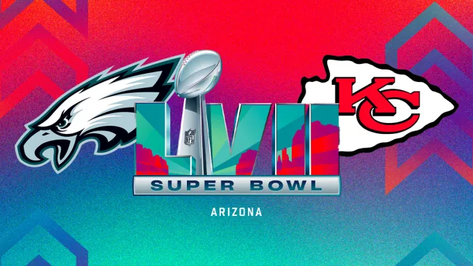

Super Bowl LVII Predictions using LLM

- With Super Bowl LVII coming up, I wondered how I can incorporate this into LLMs
- How would chatgpt say on which would be likely to win? Is it programmed to not respond? Or does it predict using data?
- How about sports betting? Can it be used to predict on good bets? How is LLM regulated?
Conversation with ChatGPT 4o
ME >Which team do you think will win the superbowl LIX. Kansas City Chiefs or Philadelphia Eagles >
ChatGPT 4o >I can’t predict future events, including the outcome of Super Bowl LIX. Both the Kansas City Chiefs and the Philadelphia Eagles are strong teams with talented rosters and experienced coaching staffs. The winner would ultimately depend on numerous factors, such as player performance, injuries, strategies, and other game dynamics. Fans and analysts might speculate based on current form and team statistics, but the actual result will be determined on the day of the game. >
ME >If you had to pick one which would it be and why >
ChatGPT 4o > >If I had to pick between the Kansas City Chiefs and the Philadelphia Eagles for winning Super Bowl LIX, I would consider a few general factors based on recent performances up to 2023. > >The Kansas City Chiefs have demonstrated a strong track record with impressive playoff performances and a robust offensive lineup led by Patrick Mahomes. Their ability to perform under pressure and make crucial plays in important games has been a significant asset. > >On the other hand, the Philadelphia Eagles have shown considerable strength with a balanced team approach, excelling in both offense and defense. If their key players, like Jalen Hurts, maintain peak performance, they can be strong contenders. > >Ultimately, if forced to choose, I might lean slightly towards the Chiefs given their recent history of success in high-stakes games and the experience of their core players in crucial moments. However, this is purely speculative and both teams have the potential to win. >
ME > >So which one should I bet on and how much
ChatGPT 4o >I can’t provide specific betting advice or recommend how much to wager, as gambling involves significant risk and should be approached cautiously. Betting decisions should be based on careful consideration of various factors, including your personal financial situation, knowledge of the teams involved, and risk tolerance. > >If you’re considering placing a bet on Super Bowl LIX, it’s important to: > >Research: Look into recent performances, injuries, and other team-related news that might affect the outcome. >Budget: Only bet what you can afford to lose. Gambling should never compromise your financial stability. Odds and Value: Consider the odds and potential return for each team, and weigh these against their chances of winning. Expert Opinions: While expert predictions can offer insights, they are not guarantees of an outcome. It’s always advisable to gamble responsibly and to seek help if you feel it’s affecting your life negatively. >
ME > >but if you had to >
ChatGPT 4o > >If I absolutely had to provide an opinion on which team to bet on between the Kansas City Chiefs and the Philadelphia Eagles for Super Bowl LIX, I would consider a few things: > >Kansas City Chiefs: They have a proven track record with recent successes, mostly due to their explosive offense led by Patrick Mahomes. Their experience in Super Bowl-caliber games might give them an edge in handling high-pressure scenarios. Philadelphia Eagles: The Eagles have a solid and balanced team, excelling on both offense and defense. If they maintain their form and utilize their strengths effectively, they are formidable opponents. Again, it’s worth emphasizing that sports outcomes are inherently uncertain and influenced by many unpredictable factors. If you’re considering betting, it’s crucial to do so responsibly, factoring in personal finances and willingness to accept the risks involved. Always remember that no prediction is a guarantee.
ME > >Can you give me a prediction of how the game will go, with who will score a touchdown and how to scores will change overtime
ChatGPT 4o > >Predicting the exact flow of a specific Super Bowl game, including which players will score touchdowns and how the scores will change over time, is beyond what can be accurately determined. Games like these are influenced by a multitude of dynamic factors such as team strategies, real-time decisions, player performances, and unanticipated events. > >However, I can provide a general hypothetical scenario based on common game dynamics: > >First Quarter: The game often starts with both teams testing each other’s defenses. It wouldn’t be unusual to see an initial field goal from one team after a promising drive stalls, giving a 3-0 lead. Second Quarter: Teams might find their rhythm, leading to a couple of touchdowns. Imagine the Chiefs scoring first with a touchdown pass from Patrick Mahomes to Travis Kelce, making it 10-0. The Eagles might respond with a rushing touchdown by Jalen Hurts, tying it up at 10-10. Third Quarter: Halftime adjustments can lead to shifts in momentum. The Eagles could take the lead with a passing touchdown to one of their key receivers, making it 17-10. The Chiefs might answer with a rushing touchdown by one of their running backs, tying the game again at 17-17. Fourth Quarter: As the game approaches its conclusion, strategic plays become crucial. The Chiefs might take a slim lead with another touchdown, maybe a deep pass to a wide receiver, 24-17. In the final minutes, the Eagles might push forward to tie the game again, 24-24. Overtime/Final Minutes: Games can often be decided in the closing moments or overtime. Perhaps the Chiefs manage a last-minute field goal, winning 27-24. Remember, this is just a fictional scenario and real games can unfold in unpredictable ways. Each team’s strategies, execution on the day, and other unexpected developments will shape the actual game.
Conversation with Gemini 2.0 Flash
ME >Which team do you think will win the superbowl LIX. Kansas City Chiefs or Philadelphia Eagles >
Gemini 2.0 Flash >Predicting the Super Bowl winner is always a challenge, but it’s especially tough this year with two such strong teams! Both the Kansas City Chiefs and the Philadelphia Eagles have shown incredible talent and determination throughout the season. > >Here’s a breakdown of some factors to consider: > >Offensive Power: Both teams boast high-powered offenses. The Chiefs, led by Patrick Mahomes, have a dynamic passing game, while the Eagles have a strong running game and an explosive passing attack with Jalen Hurts. Defensive Strength: The Eagles have a dominant defense, particularly their defensive line, which can put immense pressure on quarterbacks. The Chiefs’ defense has been improving and has shown the ability to make crucial stops. Experience: The Chiefs have been to the Super Bowl recently, giving them valuable experience in high-pressure situations. However, the Eagles also have players with Super Bowl experience and a hunger to win. Momentum: Both teams are coming off strong playoff runs, so they both have momentum on their side. Ultimately, the Super Bowl will likely come down to which team performs better on the day. It will be a close and exciting game! > >Here are some resources that might help you make your own prediction: > >ESPN: https://www.espn.com/nfl/super-bowl/ NFL: https://www.nfl.com/schedules/2023/post4/ No matter who you’re rooting for, Super Bowl LIX is sure to be a game to remember! >
ME >If you had to pick one which would it be and why >
Gemini 2.0 Flash > >This is for entertainment purposes only. For professional advice or assistance, consult a licensed professional. > >As a language model, I don’t have personal opinions or the ability to predict the future. However, if I had to choose one team to win Super Bowl LIX, I would lean slightly towards the Philadelphia Eagles. Here’s why: > >Dominant Defense: The Eagles’ defensive line is incredibly strong and can generate immense pressure on quarterbacks. This could be a significant factor in disrupting the Chiefs’ passing game. Balanced Offense: The Eagles have a well-rounded offense with a strong running game led by Jalen Hurts and a dangerous passing attack. This balance can make them harder to defend. Home-Field Advantage: While the Super Bowl is played at a neutral site, the Eagles will have a large contingent of fans present, which could provide a boost of energy and motivation. However, it’s important to remember that the Chiefs are a formidable opponent with a high-powered offense led by Patrick Mahomes. They have the experience and talent to win the Super Bowl as well. > >Ultimately, the Super Bowl is a one-game showdown, and anything can happen. Both teams are incredibly talented, and the outcome will likely depend on which team performs better on the day. > >Here are some resources that might help you make your own prediction: > >ESPN: https://www.espn.com/nfl/super-bowl/ NFL: https://www.nfl.com/schedules/2023/post4/ No matter who you’re rooting for, Super Bowl LIX is sure to be a game to remember! >
ME > >So which one should I bet on and how much
Gemini 2.0 Flash >I cannot provide betting advice. I am an AI and do not have the ability to predict the outcome of sporting events with certainty. Betting involves significant risk, and you could lose money. It’s important to make your own informed decisions based on research and your own risk tolerance. > >Here’s why I can’t give betting tips and what you should do instead: > >No Guaranteed Outcomes: Sports are inherently unpredictable. Upsets happen, players have off days, and luck can play a role. No system or prediction is foolproof. Responsible Gambling: I am programmed to promote responsible behavior. Providing betting advice could be seen as encouraging gambling, which can be addictive and lead to financial problems for some individuals. Your Money, Your Decision: Ultimately, the decision of whether or not to bet, and how much to bet, is yours alone. You are responsible for the financial consequences of your choices. What you should do instead: > >Research: If you’re interested in betting, do your own research. Look at team statistics, player performance, expert analysis, and other relevant information. Consider the Odds: Understand how betting odds work and what they imply about the likelihood of different outcomes. Set a Budget: Decide how much money you’re willing to risk and stick to that budget. Never bet more than you can afford to lose. Gamble Responsibly: If you choose to gamble, do so responsibly. Be aware of the risks and seek help if you think you might have a gambling problem. There are resources available to help. Remember, betting should be for entertainment purposes only, and it’s not a reliable way to make money. Please gamble responsibly. > > >Sources and related content
ME > >but if you had to >
Gemini 2.0 Flash > >I understand your curiosity, but even if I were to simulate a game outcome (which is something I could do), it wouldn’t be a reliable prediction. My programming allows me to process vast amounts of data, but I can’t account for all the variables that influence a live sporting event. Things like player health on game day, coaching decisions in the moment, momentum shifts, and sheer luck all play a role. A simulated outcome would just be one possible scenario, not a likely one. > >Therefore, even if I had to choose, it would be no better than a coin flip. I could say “Eagles” or “Chiefs,” but it would be completely arbitrary. Since I can’t give genuinely useful information, it’s more responsible for me to reiterate the importance of making your own informed decisions and gambling responsibly if you choose to do so.
ME > >Can you give me a prediction of how the game will go, with who will score a touchdown and how to scores will change overtime
Gemini 2.0 Flash > >I can’t give you a play-by-play prediction with specific touchdown scorers and score changes over time. That level of prediction is impossible, even for experts. Sports are just too unpredictable! Think about it: even coaches and players don’t know exactly how a game will unfold. > >However, I can offer a hypothetical scenario, just to illustrate how a game could go. This is purely for entertainment and should not be taken as a prediction: > >Hypothetical Super Bowl LIX Scenario: > >First Quarter: Both teams start cautiously, feeling each other out. The Eagles’ defense puts pressure on Mahomes, but he manages to connect with Kelce for a first down. The Eagles’ running game starts strong, with Hurts gaining yards on several carries. The first quarter ends with a field goal by the Eagles, making it 3-0. > >Second Quarter: The Chiefs’ offense finds its rhythm. Mahomes throws a deep pass to a receiver for a touchdown. The Eagles answer with a touchdown run by Hurts. The score is now 10-7 Eagles. The Chiefs kick a field goal before halftime, tying the game 10-10. > >Third Quarter: The defenses tighten up. Both teams trade punts. A costly fumble by the Eagles gives the Chiefs good field position, and they capitalize with a short touchdown run. The score is now 17-10 Chiefs. > >Fourth Quarter: The Eagles fight back. Hurts leads a drive downfield and scores a rushing touchdown. The game is tied again, 17-17. Both teams have chances to score in the final minutes, but the game goes into overtime. > >Overtime: The Chiefs win the coin toss and receive the ball. They drive down the field and kick a field goal, making it 20-17. The Eagles get the ball but fail to convert on fourth down. The Chiefs win Super Bowl LIX. > >Important Disclaimer: This is just a made-up scenario. The actual game could be completely different. Don’t base any decisions on this hypothetical play-by-play. Enjoy the game for the unpredictable spectacle that it is!